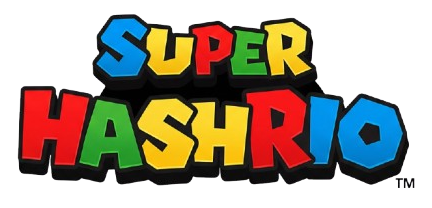

Tu navegador no soporta el elemento de audio.

Tu navegador no soporta canvas :(
¡Nivel Completado!
Has revelado los hashes para
.
Putty
Plink
VirtualBox
Descargar
Siguiente Nivel
¡Felicidades, Héroe del Reino Champiñón!
Has encontrado todos los hashes de todas las aplicaciones.
Volver a Jugar